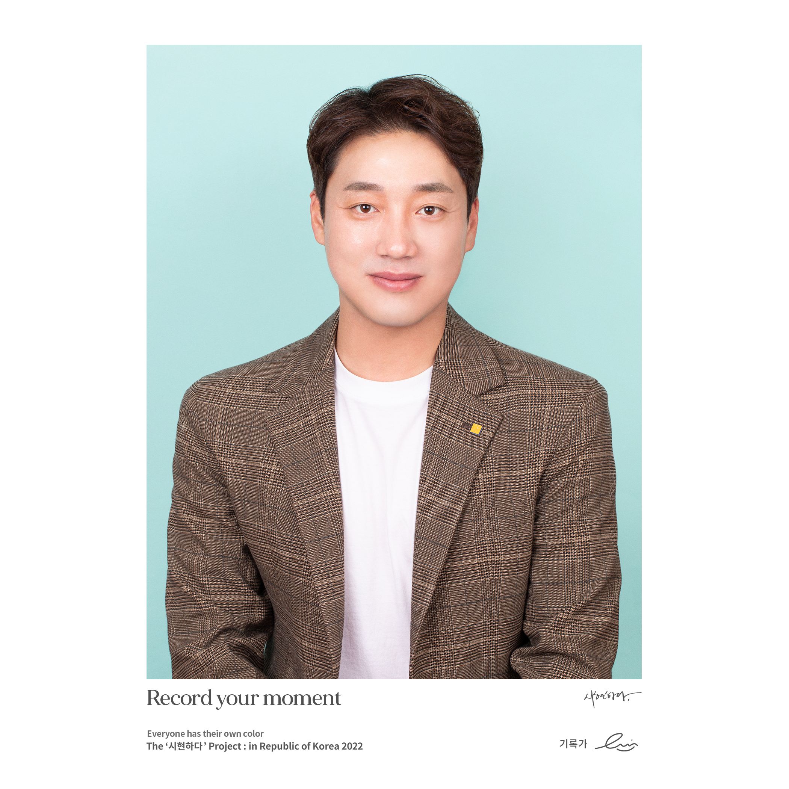

영업에서 시작해 운영을 배우고, 데이터를 분석하며, 사업을 직접 경험했습니다. 지금은 기획부터 개발과 배포까지 직접 참여하고 있습니다.
제가 잘하는 일은 현장의 문제를 발견하고, 사람과 데이터, 기술을 연결해 더 나은 결과를 만드는 것입니다.
Sales · Operations · Business · Leadership · Development

고객이 진짜 필요로 하는 것이 무엇인지 파악하고, 그 문제를 해결해주는 것이 영업의 본질이라고 생각합니다. 제품을 설명하기 전에 먼저 듣고, 상대방의 고민을 이해하는 것에서 시작합니다.
한 번의 계약보다 오래 지속되는 관계를 만드는 것이 중요합니다. 단기 성과에 집착하기보다, 고객과의 신뢰를 쌓아 자연스럽게 재계약과 추천으로 이어지는 선순환을 만들어왔습니다.
보고서 속 숫자만으로는 보이지 않는 것들이 있습니다. 직접 현장에서 고객을 만나고, 그 경험에서 얻은 인사이트를 데이터와 결합할 때 가장 정확한 영업 전략이 나온다고 믿습니다.
좋은 영업 성과는 개인의 역량만으로 만들어지지 않습니다. 기획, 개발, 운영 등 유관 부서와의 긴밀한 협업이 뒷받침될 때 고객에게 진정한 가치를 전달할 수 있습니다.
검증된 리더의 단기 성과만으로는 조직이 성장하지 않습니다. 서비스 가치를 정확히 전달하고, 업셀·리텐션·파트너십으로 이어지는 구조를 설계하는 것이 핵심입니다. 영업 성과는 개인이 아닌 협업에서 나오며, 운영·개발·기획을 연결하는 구조적 리더십을 지향합니다.
동서울대학교 / 마케팅학과 졸업 (2007)
영업 전략 수립 및 성과 관리
서비스 운영 및 프로세스 개선
조직 빌드업 및 협업 체계 구축
데이터 기반 의사결정
사업 전략 및 서비스 기획
AI 활용 개발 및 배포
영업, 운영, 기획, 창업을 직접 경험했기 때문에 개별 부서의 관점에 머무르지 않고 사업 전체를 이해하며 일합니다.
현장에서 발견한 문제를 데이터로 확인하고, 영업 전략과 운영 프로세스 개선으로 연결합니다.
개인의 역량에 의존하는 조직보다 구성원들이 협업하며 지속적으로 성과를 만들어낼 수 있는 구조를 지향합니다.
문제를 발견하고 개선안을 제안하는 데 그치지 않고, 필요한 서비스를 직접 기획하고 개발하며 실제 업무에 적용합니다.
단기적인 계약 실적보다 고객과의 신뢰, 서비스 이용 경험, 장기적인 파트너십을 중요하게 생각합니다.
제가 일을 바라보고 접근하는 방식
위 성향은 실제 업무 경험과 영업 철학을 바탕으로 정리한 예시이며, 공식적인 성격 검사 결과는 아닙니다.
단점을 나열하기보다, 지금 어떻게 개선하고 있는지 보여주는 방식입니다.
| 보완하고 있는 부분 | 성장 방향 |
|---|---|
| 직접 해결하려는 성향 | 업무 위임과 구성원의 성장 기회 확대 |
| 문제를 깊게 고민하는 성향 | 빠른 실행과 검증의 균형 |
| 넓은 업무 경험 | 핵심 전문성 강화 및 경험 간 시너지 창출 |
| 익숙한 성공 방식 | 새로운 시장과 환경에 맞는 유연한 판단 |
여행과 캠핑을 즐기며 가족들과 다양한 활동을 합니다. 한 번 방문한 도시는 재방문보다 새로운 장소와 문화 탐색을 선호합니다.
체력 관리와 스트레스 해소를 위해 운동을 꾸준히 실천합니다. 수영, 필라테스, 헬스 등 다양한 활동을 통해 밸런스를 유지합니다.
유튜브보다는 책을 읽으며 여가시간을 보내는 것을 선호합니다. 독서는 생각의 폭을 넓히고, 업무에도 깊이 있는 인사이트를 제공합니다.